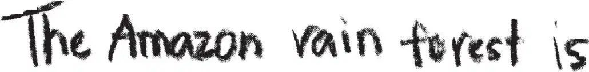
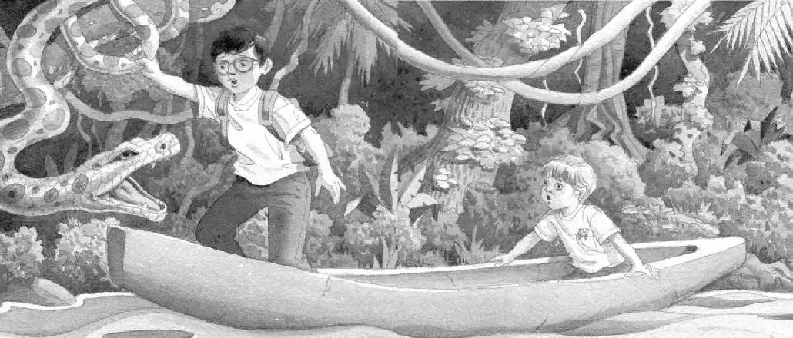

Squeak.
Annie patted the little mouse in her pocket.
“It’s okay, Peanut. The ants can’t get us in the river. We’re safe,” she said.
“Maybe safe from the ants,” said Jack. “But where is this canoe going?”
Jack and Annie stared at the river. Branches spread over the water. Vines and mosses hung down from them.
“We’d better look this up,” said Jack. He pulled the rain forest book out of his backpack and flipped through it.
Soon he found a picture of a river. He read:
The Amazon River stretches over 4,000 miles from the mountains of Peru, across Brazil, to the Atlantic Ocean. The river basin contains over half of the rain forests in the world.
Jack looked at Annie. “We’re on the Amazon River,” he said. “It’s more than four thousand miles long!”
“Wow,” Annie whispered. She looked at the river. She trailed her hand through the water.
“I have to make some notes—” Jack said. He pulled his notebook out of his pack. He wrote:

“Jack, look at those pretty fish with the teeth,” said Annie.
“What?” Jack glanced up from his writing.
Annie was pointing at some blue fish swimming near the boat. The fish had red bellies and razor-sharp teeth.
“Watch it!” cried Jack. “Those aren’t pretty fish. They’re piranhas! They’ll eat anything! Even people!”
“Yikes,” whispered Annie.
“We better get back on shore,” said Jack, putting the books in his backpack.
“How?” said Annie. “We can’t go in the water now. And we don’t have any paddles.”
Jack tried to stay calm. “We need a plan,” he said.
Jack stared at the river. The canoe would soon float under some vines.
“I’ll grab a vine,” said Jack. “And pull us to shore.”
“Good idea,” said Annie.
As they glided under the branches, Jack stood up.
The canoe rocked. He nearly fell out.
“Balance the canoe,” said Jack.
Annie leaned to one side. Jack reached—he missed!
The canoe floated under more branches.
Jack reached for another thick vine.
He grabbed it!

It was cold and scaly. It wiggled and jerked!
“Ahhh!” Jack screamed and fell back into the canoe.
The vine was alive!
It was a long green snake!
The snake fell from the tree. It splashed into the water and swam away.
“Oh, man,” said Jack.
He and Annie stared in horror at each other.
“What now?” said Annie, making a face.
“Well…” Jack looked at the river. There were no vines up ahead. But there was a big branch floating on the water.
“Grab that branch near you,” said Jack. “Maybe we can use it for a paddle.”
The canoe floated closer to the branch. Annie reached for it.
Suddenly the branch rose into the air!
It was a crocodile!
“Help!” screamed Annie, and she fell back into the canoe.
The crocodile opened and closed its huge, long jaws. Then it moved past the canoe and swam up the river.
“Oh, man,” whispered Jack.
A screeching sound split the air.
Jack and Annie jumped.
“Help!” said Jack.
He expected to see another terrible creature.
But all he saw was a small brown monkey, hanging by its tail from a tree.